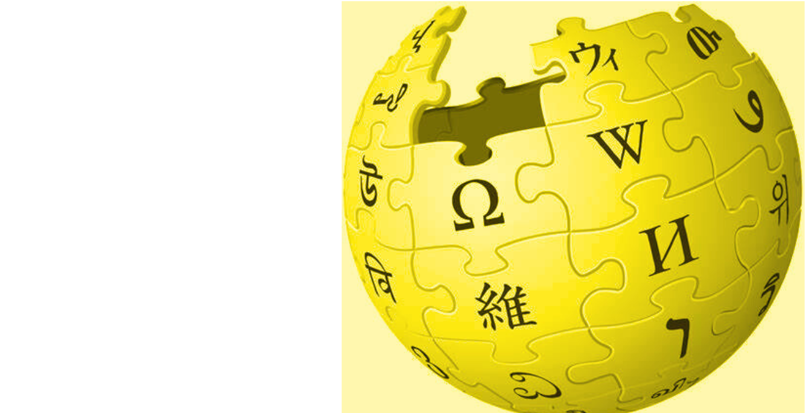
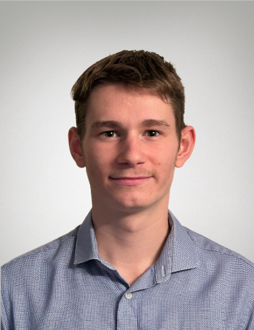
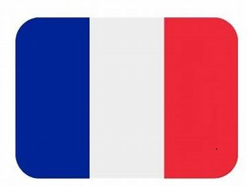
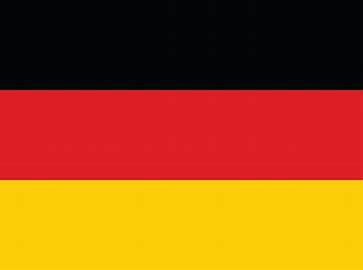
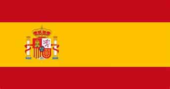

Baptiste Dutoit
CEVEDIA 
Bienvenue sur la page cevedia de Mr. Baptiste Dutoit. Ce site n'est pas réalisé par un professionnel mais par un étudiant qui cherche à diversifier de manière practico-ludique son éventail de compétences, donc veuillez être indulgent quant à la qualité du code. Bien évidemment toute ressemblance avec une autre encyclopédie en ligne collaborative et gratuite serait complètement fortuite. Je vous souhaite une bonne lecture.
Situation actuelle
Baptiste (Bernard) Dutoit, né le 18 Mai 2003 à Marcq-en-Baroeul en France, est un étudiant français scolarisé à JUNIA HEI, une école d'ingénieur généraliste.
Sensible aux enjeux écologiques actuels et au développement de nouvelles technologies, Baptiste a fait le choix de s'orienter pour une option internationale "Smart and Resilient
Cities". Ce master complètement en anglais aborde les notions du développement intelligent, dans les domaines de l'énergie, de la mobilité et des nouvelles technologies, dans les villes de
demain.
Dans l'optique de valider ce Master l'année prochaine, Baptiste est à la recherche d'un stage à l'étranger et d'une alternance en tant qu'ingénieur assistant
dans le secteur des énergies renouvelables, de la gestion de réseaux intelligents ou de la Data analyse.
| Critères | Fiche de recherche de stage à l'international | Fiche de recherche d'alternance |
|---|---|---|
| Type de contrat | Stage professionnel | Contrat de professionnalisation |
| Durée | 3-4 mois | 12 mois |
| Début | A partir du 1er Mai 2024 | A partir du 1er Septembre 2024 |
| Lieu | Hors de la France | Lille, France |
Compétences
| Compétences relationnelles | Compétences techniques | Compétences informatiques |
|---|---|---|
| Curiosité Ouverture d'esprit Créativité Autodidacte |
Energies Energies vertes (photovoltaïque, nucléaire, éolienne...) Thermodynamique/Transfert de chaleur Gestion de réseaux énergétiques intelligents Transition énergétique |
Java/JavaFX/Scenebuilder Développement JavaFX d'un Mille Bornes, d'un Pendu, d'un Mastermind, d'un Monopoly et d'un Quizz Foot Scenebuilder comme interface graphique |
| Leadership Esprit d'équipe Sens du relationnel Persuasion |
Construction Building Information Modeling (BIM) Architecture Résistance des Matériaux Projet PISTE |
Python/Jupyter/Arduino Projet d'analyses météorologiques dans le cadre de la gestion d'un site urbain Formation avancée en classes préparatoires MP |
| Esprit de compétition Force de proposition |
Informatique Analyse de données Développement d'applications Systèmes embarqués Internet of Things/Objets connectés |
Pack office/SQL/VBA/PowerBI Présentations de projets récurrentes Projet de traitement de données des équipes de ligue 1 Certification PIX |
| Adaptabilité Gestion du stress Organisation |
Economie Organisation d'entreprise Marketing Communication Comptabilité Management de projet Villes circulaires |
Rhino/Revit/AutoCad/QGIS Projets de construction/réhabilitation Création de map/plan 2D Modélisation 3D Analyse des paramètres environnementaux |
| Baptiste Dutoit |
|---|
|  |
| Statut Etudiant |
| Formation actuelle Hautes Etudes d'Ingénieur (JUNIA HEI) |
| Option de Master Smart And Resilient Cities |
| Année d'obtention du diplôme 2025 |
| Nationalité  France |
| Langues Français (langue maternelle) Anglais (C1)  Allemand (B2)  Espagnol (A2) |
| Diplômes FCE Cambridge B2 (2020) Baccalauréat S euro Allemand (2020) Goethe Institut B1 (2019) Brevet des Collèges (2016) |
| Formation HEI cycle ingénieur 2022- HEI classes préparatoires MP 2020-2022 Lycée Saint Adrien La Salle 2017-2020 Collège Jeanne d'Arc 2013-2017 |
| Contact dutoit.baptiste@gmail.com +33 7 499 98 73 99 
|
Expériences professionnelles
- Employé polyvalent, Hôtel Colosseo, Europa-Park resort Lieu: Rust, Allemagne Date: Mai 2023 - Juillet 2023 (2 mois)
Lors de l'été 2023, de Mai à Juillet, Baptiste s'est lancé dans une expérience professionnelle
en totale immersion en Allemagne dans le cadre de l'International Break (IB) imposée par HEI.
L'IB est une période durant laquelle chaque étudiant doit partir travailler hors de la France afin
d'acquérir une expérience professionnelle, de découvrir de nouvelles cultures et changer sa manière
de voir le monde par la même occasion.
Déterminé à améliorer drastiquemment son niveau en allemand,
c'est donc tout naturellement que Baptiste choisit d'orienter sa destination vers la patrie des penseurs et
des poètes ("das Land der Dichter und Denker"), autrement dit l'Allemagne. Après plusieurs mois de recherche et
de nombreux entretiens, il finira par être embauché pour une durée de 2 mois dans le plus célèbre
parc d'attraction européen, Europa-Park, et plus précisément dans un hôtel 4 étoiles-supérieur, l'Hôtel
Colosseo.
Concernant la partie purement professionnnelle, ces horaires étaient majoritairement planifiés
le matin de 7h à 16h, 5 jours par semaine. Il s'occupait de recevoir les clients de toute nationalité, de leur désigner
une table et enfin de prendre leur commande. Ce fut pour lui un excellent exercice de renforcement linguistique.
Pour la partie extra-professionnelle, Baptiste vivait seul en tente dans un camping frontalier de l'autre côté du Rhin, à Rhinau.
Afin de se rendre au travail à 7h, il devait se lever à 5h30 et faire 1h de vélo. Des conditions bien loin d'être idéales, certes, mais
néanmoins extrêment formatrices pour sa vie future; il se répétait à longueur de temps qu'à vaincre sans péril, on
triomphe sans gloire. Il retourna finalement en France en fin Juillet 2023, en ayant emmagasiner une expérience formidable.
- Ouvrier en entrepôt pharmaceutique, Norcap SAS Lieu: Roubaix, France Date: Juillet 2022 - Août 2022 (1 mois)
Dans le cadre d'un stage ouvrier, Baptiste a travaillé 1 mois dans un entrepôt stockant des produits pharamaceutiques afin d'acquérir une nouvelle expérience professionnelle en tant qu'ouvrier pour mieux comprendre le monde de l'entreprise à toutte les échelles. Son objectif était de préparer des commandes pour des pharmacies, réaliser des inventaires de stock et de nettoyer l'entrpôt. Une expérience très formatrice qui lui a permis de décoouvrir le domaine pharmaceutique.
- Hôte de caisse, Carrefour Market Lieu: Hem, France Date: Août 2021 - Juin 2022 (10 mois)
En parallèle de ma 2ème de classes préparatoires MP, Baptiste occupait le poste d'Hôte de caisse/Magasinier en tant emploi étudiant. Une période fatiguante mais forte de part son rythme et de part les leçons qu'il a pu tirer. Ayant l'obligation de réaliser un stage ouvrier, Baptiste rompit son contrat étudiant pour démarrer une nouvelle expérience.
- Préparateur de commandes, Chronodrive Lieu: Croix, France Date: Juin 2021 - Juillet 2021 (1 mois)
La première expérience professionnelle de Baptiste était un job de préparateur de commande à Chrnonodrive, au rayon frais. Une expérience d'un mois qui lui a permis de décourvrir le monde ouvrier dans une entreprise jeune et dynamique. L'adaptation fut quelque peu compliquée en raison de son manque d'expérience et du rythme imposé par le métier de préparateur de commandes.
- Stage d'observation, Ankama
Bien que ce ne soit pas réellement une expérience professionnelle et que la majorité des personnes ignore voire oublie l'existence
ce stage d'observation, pour Baptiste ce fut une semaine très marquante. Ankama est un groupe indépendant de création numérique
spécialisé dans le domaine du divertissement et incontournable dans le monde du jeu vidéo, ayant notamment réalisé le fameux jeu DOFUS.
En passant par le développement graphique de l'univers au code informatique du jeu vidéo, tous les domaines lui furent présentés.
Lors de ce stage Baptiste fut pris de passion pour le domaine du développement informatique et de la création d'application. Ce n'est seulement
que quelque jours plus tard, qu'il décida de se lancer dans la création de ses propres jeux.
Expériences extra-professionnelles
- Vie assiociative à JUNIA HEI (Président P'heitanque - Secrétaire Winnie Whei - Vice-Président Las'heir Game)
Outre le niveau de formation, ce qui fait aussi le charme des grandes écoles c'est leur faculté à créer des liens et des contacts
entre les travailleurs de demain. C'est pourquoi, lors de son cursus à HEI, Baptiste s'est fortement investi dans la vie associative de son école.
Il a tout d'abord été le Vice-Président de l'association Las'heir Game, qui, comme son nom l'indique, a pour objectif d'organiser des parties de Laser Game
à prix avantageux entre les élèves de HEI uniquement. C'est une petite association (2 personnes) qui forme donc ces 2 représentants à beaucoup de domaines
tels que la communication, l'organisation d'events et l'administration.
Par la suite il intègrera le Winnie Whei, l'association d'intégration de l'école dans laquelle il occupera le poste de secrétaire. Il y apprit énormément
de choses concernant l'administration mais aura surtout vécu une expérience super enrichissante.
Aujourd'hui Baptiste est le président de l'association P'heitanque et met désormais en application ses compétences associatives acquises ses 3 dernières années,
notamment en terme de management et de communication, pour organiser divers évenments et tournois sportifs
de ce grand sport de boule.
- Joueur/Entraîneur de Football (Villeneuve d'Ascq Métropole - JUNIA HEI)
Passionné de Football, Baptiste a commencé à jouer en club dès ses 5 ans (en catégorie u6) à l'Iris Club de Croix. A la recherche de plus haut niveau, il quittera celui-ci pour rejoindre
le Villeneuve d'Ascq Métropole en u10, qui deviendra par la suite son club de coeur. Son intégration fut rapide et efficace puisqu'il fut surclassé une catégorie au-dessus dès sa première année
et obtiendra même le brassard de capitaine qu'il gardera jusque à ce qu'il arrête le Football en club pour se consacrer à 100% sur ses études. Par la suite il renouera avec les terrains en rejoignant l'équipe 1 de JUNIA HEI.
Son rôle de capitaine lui a apporté énormément de choses, notamment une prise de responsabilité très jeune, des capacités de communication sur et en dehors du terrain et un sens du leadership.
De plus, jouer à relativement haut niveau (Régional 2), lui a permis développer encore plus son esprit de compétition et sa propension à toujours vouloir
relever de nouveaux défis.
En parallèle de sa carrière de joueur amateur, il s'essaiera également au rôle d'entraîneur en étant tout d'abord éducateur des jeunes
de son club d'en temps, les enfants agés de moins de 6 ans (u6) du Villeneuve d'Ascq Métropole, pour ensuite entraîner durant la saison 2022-2023 l'équipe universitaire de JUNIA HEI.
Ces passages en tant que coach, lui ont apporté une vision plus large d'un point de vue footballistique, mais aussi de profondes compétences de management d'équipe.
- Engagement citoyen
Dans le cadre de son engagement citoyen, Baptiste a contribué de manière significative à diverses initiatives
humanitaires et sociales. En tant que brancardier lors d'un pèlerinage à Lourdes en 2017, il a apporté son aide et son soutien
aux personnes malades et handicapées, démontrant ainsi son altruisme et sa compassion envers les autres.
Ses participations actives dans des programmes de cohabitation religieuse à Taizé témoignent de son désir de promouvoir le dialogue interreligieux
et la compréhension mutuelle au sein de la société.
De plus, Baptiste a consacré du temps à aider les plus démunis en accueillant
les bénéficiaires des Restos du Cœur, illustrant ainsi son engagement envers la lutte contre la pauvreté et son désir de contribuer
positivement à sa communauté.
Projets réalisés
- Développeur Web pour l'agence d'hôtellerie TBRM, Tunon Bordeaux
L'agence TBRM est une agence représentée par des élèves de l'école d'hotellerie et de luxe, Tunon Bordeaux. Lors du Business Game de 2024, l'agence TBRM devait présenter
un projet d'implémentation de 4 nouveaux sites Casa Barbara, des villages paisibles pour accompagner les séniors dans leur fin de vie.
C'est donc dans le cadre d'un jury
de présentation de projet que le reponsable commercial, Mattéo Dessenne, a contacté Baptiste Dutoit afin de réaliser un site vitrine aux couleurs de Casa Barbara
qui met en avant les differents nouveaux sites et leurs activités associées.
Ce fut une mission des plus enrichissantes pour Baptiste, puisqu'elle lui a permis
d'une part de s'exercer au Web Development qu'il a appris en autodidacte, et d'autre part de collaborer avec des étudiants
d'un autre monde, l'univers de l'hôtellerie, du luxe et du tourisme.
Vous pouvez visiter le site en cliquant sur ce lien.
- Urban Studio, Projet de réhabilitation d'un site urbain
Explication du projet
Dans le cadre son cursus à HEI, Baptiste doit mettre en application ses compétences acquises en urbanisme, énergie et mobilité en réalisant ce projet de réhabilitation du site Edard à Croix. Ce site était jadis une ancienne zone industrielle textile mais désormais en grande partie abandonné. L'objectif de ce projet est donc premièrement de redonner une second vie à ce site historique en prenant en compte l'environnement qui l'entoure. Néanmoins certaines contraintes viennent s'appliquer à ce projet. En effet, ce site doit contenir au moins 4000 m² de bureaux, restaurants et autres types de service, mais aussi 215 unités de logements (76 logements sociaux et 139 logements de propriétaires). L'objectif ici est de créer un site multi-usage avec une jonction entre habitants et activités. Comme vous pouvez le voir sur ces photos et cette map QGIS qu'il a réalisée, le site est situé en plein centre-ville et les bâtiments autour sont composés majoritairement de briques rouges. L'avantage est que la localisation de ce site lui permet d'offrir d'ores et déjà divers activités et une connexion facile au métro et aux bus, en revanche l'objectif ici va être de redynamiser ce site pour qu'il impacte cette zone vieillissante de Croix.
Solutions proposées
Le projet est en cours d'aboutissement aujourd'hui et se nomme "Vies Croixées" en référence à la volonté de réunir les habitants et travailleurs de ce site à travers
la mise en place de différentes activités (restaurants, salle de sport et un cyber café équipé d'une salle d'arcade), d'espaces publics (co-working et balcons partagés) et
d'aménagements extérieurs (kiosque, lac et jardins communs).
Concernant les constructions réalisées, le site se voit implanter, dans le repsect du Plan Local d'Urbanisme (PLU)
8 nouveaux bâtiments équipés pour certain de parkings et de sous-terrains. Comme vous pouvez le voir sur les plans AutoCad, ils sont orientés vers le sud afin d'exploiter
au maximum les ressources naturelles solaires (luminosité et chaleur).
Ces bâtiments ont une particularité forte dans le cadre de "Vies Croixées", il s'agit d'une facade extérieure en verre comme
vous pouvez le voir sur la photo. C'est une double peau qui permet d'une part de créer un espace commun entre les différents habitants d'un bâtiment, et d'autre part permet d'améliorer l'isolation thermique
et de mieux gérer la luminosité en fonction de la position du soleil et des différentes orientations du bâtiment.
- Projets de Building Information Modeling (BIM)
Dans l'optique de développer des villes plus intelligentes, le Building information Modeling (BIM) est indispensable.
Le Building Information Modeling (BIM) est une méthode de modélisation numérique qui permet de concevoir, construire et gérer des infrastructures urbaines de manière collaborative et coordonnée. En intégrant des données géospatiales, des informations sur les matériaux, les coûts et les performances, le BIM offre une représentation virtuelle détaillée et précise d'un projet, permettant aux acteurs impliqués de mieux visualiser et comprendre chaque aspect du projet.
Cette approche favorise une meilleure coordination entre les différents intervenants, réduit les erreurs et les coûts de construction, et permet une gestion plus efficace tout au long du cycle de vie d'une infrastructure urbaine.
Dans un contexte de villes intelligentes et résilientes, où la durabilité, la gestion des ressources et la résilience aux crises sont essentielles, le BIM devient un outil indispensable pour concevoir et gérer des villes plus efficaces et durables.
C'est pourquoi dans le Master "Smart and Resilient Cities", des cours de BIM sont enseignés où des élèves réalisent des modélisations 3D avec Revit/Autocad.
Ces 2 différents projets ont été réalisés par Baptiste, avec l'aide de plans fournis par la professeure Madame Rania Wehbi.
- The Threading House, Projet de Villes circulaires
The Threading House est un projet qui vise à développer un système d'économie circulaire pour des
villes qui se veulent être plus résilientes.Ce concept s'oriente autour du textile car aujourd'hui, les personnes achètent 60% plus de vêtements qu'il y a 15 ans
et que nous gardons ces vêtements 2 fois moins longtemps. De plus 95% des déchets textiles sont recyclables !
Le concept est simple: The Threading House est une boutique
de réparation de vêtements qui vise à encourager le recyclage, le DIY et l'économie circulaire. D'une part, les personnes voulant réparer leurs habits peuvent venir et apprendre à réparer
les imperfections ou même à personnaliser leurs vêtements. D'autre part les gens peuvent venir nous rendre ceux qui ne leur plaisent plus en échange de bons de réduction dans des
magasins partenaires. Ensuite ces vêtements sont envoyés par The Threading House vers des centres de tri qui nous rémunèreront pour cela et vont envoyer ces textiles triés
vont faire office de matières premières pour des usines de fabrication de divers objets à base de textiles recyclés qui seront à leur tour vendus dans d'autres boutiques. La
boucle est fermée grâce à ce projet de The Threading House. N'hésitez pas à regarder la vidéo (en anglais) réalisée par Baptiste Dutoit.
- Projet PISTE (Projet d'Intégration Scientifique Technologique et Economique), Conception d'un système innovant de récupération d'eau de pluie Low-Tech
Lors de sa 3ème année à HEI, chaque étudiant passe par le fameux Projet PISTE, un Projet d'Intégration Scientifique, Technologique et Economique
durant lequel les notions de management de projet sont mis à l'épreuve, bien évidemment accompagnées de divers compétences scientifiques. La particularité de cet
exercice est qu'il repose sur une innovation qui se veut être Low-tech autour d'un thème prédéfini. Baptiste se présente comme chef de projet
autour d'une thématique de récupération d'eau pluviale innovante.
Après un brainstorming intensif, l'idée principale retenue est de générer, à l'aide de la chute
d'eau pluviale, de l'électricité. Baptiste et son groupe développeront leur projet d'installer des cuves sur le toit en mettant en pratique leurs compétences scientifiques
comme la Résistence des Matériaux mais surtout des compétences en Management de projet.
Ce projet fut une expérience
complètement nouvelle pour Baptiste, car ayant la responsabilité de chef de Projet, il a dû réaliser des tâches qui lui étaient inconnues comme un planning de Gantt, des rapports de réunionsou encore une
cartographie des acteurs.
Cette expérience lui restera mémorable, en récoltant au passage, des compétences comme le
travail en équipe, l'organisation de projet et le leadership, indispensables pour un chef de projet.